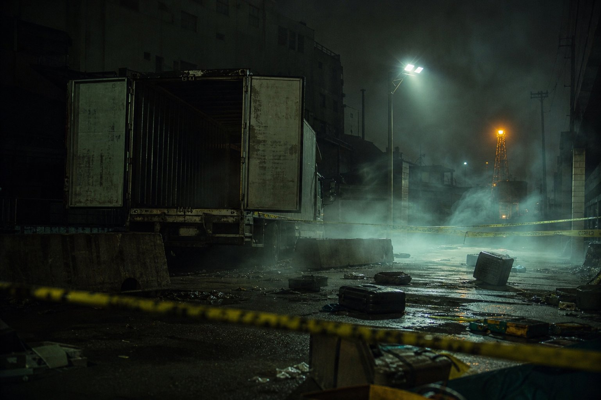
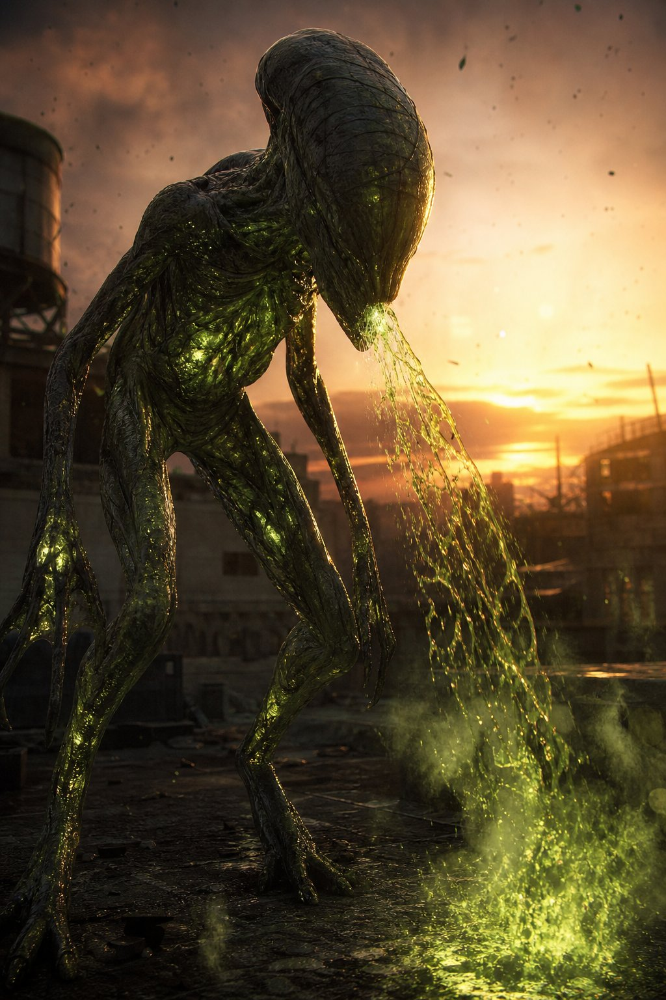
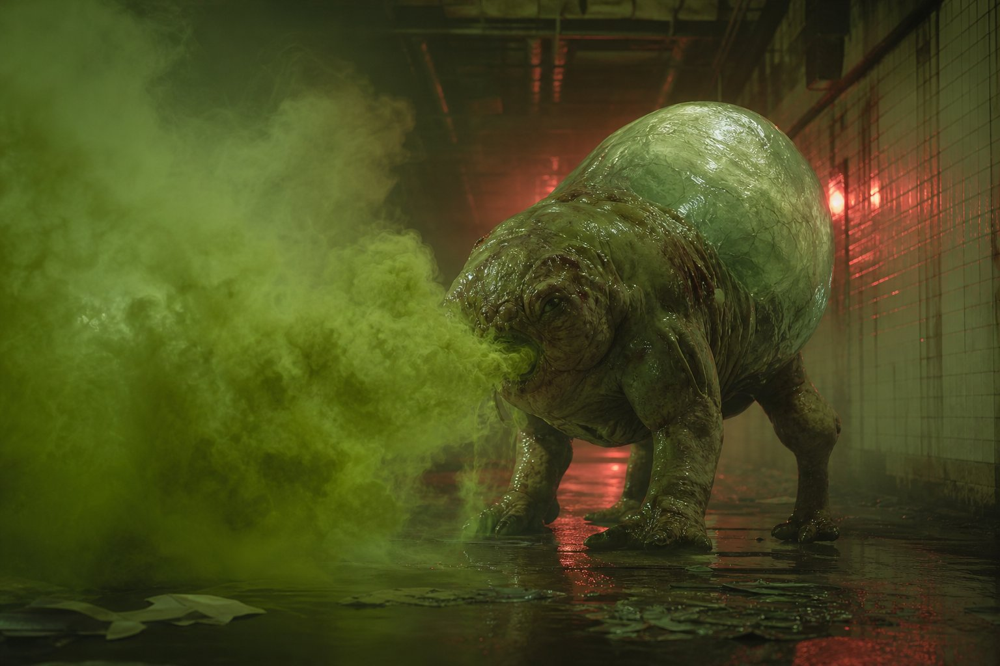
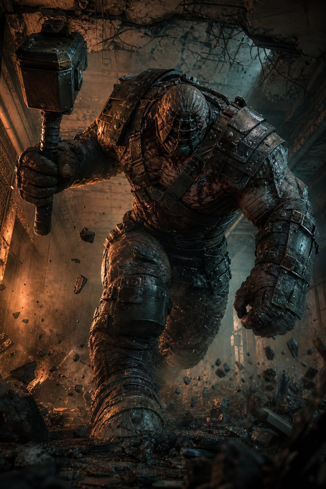
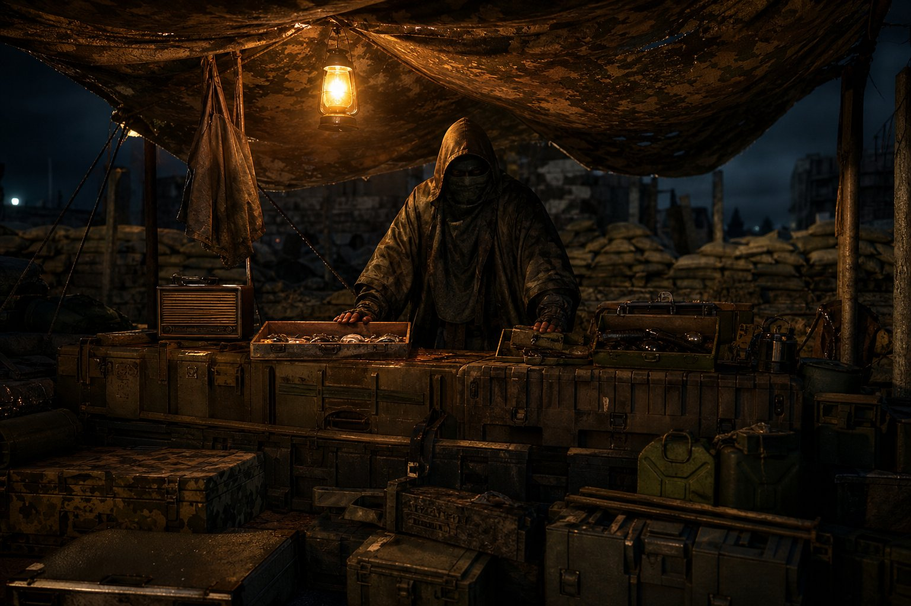

1. Le principe
L'Infected Zone prend le raid d'extraction classique et y ajoute des mutants — IA infectée qui chasse, occupe des positions et contamine le terrain. Le loot, les extractions, le marchand : tout le reste fonctionne comme en Tactical Ops. Seuls les modes et les boss changent.
Répartition de la contamination
Farm et Airport basculent en Heavy Infected Zone (remplaçant respectivement Forbidden Zone et Forbidden Zone). Valley passe en Infected Zone standard (à la place de Lockdown Zone) et gagne de nouvelles conditions météo : nuit pluvieuse, nuit, brouillard, soleil, pluie.
Le plafond de valeur d'équipement s'applique ici aussi
Les restrictions d'équipement de la Saison 7 ne s'arrêtent pas aux raids classiques : pour les raids Lockdown — Infected Zone comprise — la valeur totale de l'équipement est plafonnée à 900 000 Koen, et seuls les casques, masques, gilets blindés et gilets de corps de niveau de protection et de pénétration 5 ou inférieur sont admis. En Heavy Infected Zone (Farm et Airport), les récompenses sont à parité avec celles de Forbidden Zone et le coût en points de clé est standardisé à 2 points pour toutes les cartes. Officiel
Deux conséquences pratiques que les joueurs overlookent : un T6 ou une munition T6 est refusé à l'entrée en Infected Zone standard, alors qu'il est parfaitement légal en Heavy Infected Zone ; et une lunette ou un rig onéreux peut faire dépasser le plafond des 900 000 Koen sans que rien ne vous prévienne — le raid ne démarre pas tant que vous n'avez pas retiré un objet. Communautaire
2. Les 6 mutants — fiche par fiche
| Mutant | Comportement | Effet | Priorité |
|---|---|---|---|
| Normal Mutant | Saute et sprinte vers les opérateurs | Aucun effet de zone | Évitable — coupez la route, ne tirez pas |
| Reaper | Crache son tissu mutant à distance, depuis un point haut | Vert : flaque d'acide · Jaune : marais ralentissant · Gris : fumée qui bloque la vue | 1 — tuez-le en premier |
| Ambusher | Bondit sur sa cible, la cloue au sol et ne lâche plus | Suppression continue | 2 — jamais à portée de mêlée |
| Bloater | Lent, il gonfle puis explose | Vert : poison · Jaune : ralentissement · Gris : flash aveuglant | 3 — tuez avant le contact |
| Breacher | Charge à vitesse folle, envoie les obstacles en l'air d'un coup de membre | Marteau lourd, coups brutaux en série | 4 — terrain à égaliser |
| Phobos | Boss. Un Breacher en armure tactique lourde, corps extrêmement résistant | Abandonne son armure quand il est mal touché et revient plus furieux | Boss — engagement d'objectif |

3. Ordre d'élimination
La communauté a très vite identifié une hiérarchie de priorité, qui diffère selon que vous jouez solo ou en groupe :
En squad
Reaper > Ambusher > Bloater > Normal > Breacher
En équipe, le Reaper est le plus dangereux : son acide transforme la carte en champ de mines. Le Breacher passe en dernier car il est prévisible et se laisse canaliser.
En solo
Ambusher > Reaper > Bloater > Normal > Breacher
Seul, l'Ambusher passe devant : il ne lâche jamais sa cible et vous transforme en statue pendant qu'il vous vide. Le Reaper passe deuxième car il vous one-shot au-delà du niveau 4 si la bave vous prend.
Ne tirez pas sur tout ce qui bouge
« Le bruit est une ressource. » Chaque détonation attire des horde de mutants et révèle votre position aux autres squads. Si un zombie ne bloque pas votre route et ne vous menace pas : contournez-le. Réservez vos munitions aux Opérateurs, aux mutants dangereux, aux zombies qui bloquent un passage et à la protection de votre extraction.


4. Les nouveaux objets de la zone
| Objet | Effet | Usage tactique |
|---|---|---|
| Grenade phéromone | Attire les mutants vers un point choisi | Ouvrir un passage, détourner un Breacher d'un couloir |
| Fumigène de soin | Restaure progressivement la santé dans la zone | Regroupement après un combat de horde |
| Lance-roquettes | Provoque la chute de cargaison | Faire tomber du loot lourd — et alerter tout le monde |
| Réactif « Pathfinder » | +PV de torse temporaires | Mais + dégâts subis des mutants et détection facilitée |
| Réactif « Messenger » | +vitesse de déplacement temporaire | Même contrepartie : plus de dégâts subis, plus visible |
| Réactif « Cornered Beast » Officiel | Les blessures sévères à la tête ou au torse vous mettent à terre au lieu de vous tuer | Trade le même risque : détection facilitée et dégâts augmentés — le seul des trois qui vous laisse une seconde chance |
| Conteneurs zombies | Conteneurs shipping, distributeurs abandonnés, caisses de Indices | Exclusifs à la zone : corps de zombies, sacs, loot spécifique |
Les trois réactifs expérimentaux de la Saison 7
Ils ne sont disponibles qu'en raid de zone infectée et ne peuvent pas être extraits : ils se paient en jetons zombies auprès du marchand de terrain, et se terminent avec la fin de la partie.
- Pathfinder — augmente les PV maximum du torse pendant une durée limitée.
- Messenger — augmente la vitesse de déplacement pendant une durée limitée.
- Cornered Beast — pendant une durée limitée, un dommage sévère à la tête ou au torse vous met à terre au lieu de vous tuer.
Les trois partagent la même contrepartie : vous subissez plus de dégâts des attaques de mutants et vous êtes plus facile à détecter. Le Cornered Beast est donc le seul à changer réellement la donne quand un mutant est déjà sur vous — mais c'est aussi celui qu'il faut amorcer le plus tôt, car sa fenêtre de protection est courte et se referme au pire moment. Officiel
Les conteneurs et objets introduits en S7
La Saison 7 n'a pas seulement ajouté des zombies : elle a ajouté des conteneurs, et ce sont eux qui ont changé le rendement de la zone. Un raid sans en ouvrir un seul est un raid raté.
| Élément | Où | Ce qu'il faut savoir |
|---|---|---|
| Signal Gun | Exclusif de la Heavy Infected Zone, trouvé dans des conteneurs aléatoires. | On la tire en l'air pour appeler une parachutiste sur votre position. La caisse a 4 compartiments, et chacun peut contenir un objet rouge. Contrepartie : la zone d'atterrissage se voit de loin. Utilisez-la seulement dans un coin dégagé. |
| Distributeurs | Sur la carte, dans les zones bâties. | Nouveauté S7 : ils donnent de la nourriture. Sans passif, c'est de la bouffe ; avec Vending Machine Hunter, ils lâchent des objets de valeur. Comme seule la première personne qui les utilise en profite, c'est une course. |
| Missions urgentes | Visibles sur la carte, par tous les joueurs de la Heavy Infected Zone. | Elles paient en caisses de loot et en grandes caisses de loot. La grande caisse donne deux chances de fouille à chaque membre de l'escouade — le butin se partage, mais la fouille, non. |
| Flesh Growths | Sur les murs et le sol, en fouillant. | Contenants de la S7. Ils peuvent contenir des passes No Man's Land, utilisables pour entrer dans le mode PvE. Si le mode ne vous intéresse pas, ces passes se vendent directement pour 500 000 Koen chacun. |
| Traces de mutation | Partout sur la carte, mais invisibles par défaut. | Une trace seule ne donne rien. Avec Hyper Intuition, vous voyez des empreintes bleues qui en partent : suivez-les, elles mènent au bio-échantillon. |
| Bio-échantillon | Au bout des traces de mutation. | Son tableau de loot est comparable à celui d'un petit coffre. C'est la principale source d'échantillons zombies, donc la principale voie de progression de l'arbre. |
Source : base de référence communautaire, guide loot et progression S7 (abibuilder.com/guides/s7-loot-guide). Donnée documentée, non publiée par l'éditeur.
L'erreur de parcours la plus fréquente
Passer devant une Flesh Growth sans la fouiller. Ces croûtes de chair sont drues, mais elles contiennent potentiellement un passe No Man's Land, c'est-à-dire 500 000 Koen ou un accès gratuit au mode PvE. De même, ignorer les missions urgentes : elles sont publiques, donc quelqu'un d'autre les fera si vous ne le faites pas.
5. Horde et contamination
- Tirer sur les voitures de police déclenche un événement de horde : une vague de mutants arrive. Ne le faites jamais en zone de loot.
- Certaines actions d'Operator peuvent déclencher une horde de mutants.
- Missions in-raid exclusives : les terminer débloque des récompenses de caisses de loot.
- Les terminaux sont désormais plus polyvinylents : un terminal normal par squad pour un peu de XP de caisse, un terminal clandestin qui exige de tenir la position pendant que les autres squads peuvent contester — pour un gros lot de XP de caisse d'un coup.
- Retours plus rapides en début de raid, durées qui s'allongent au fil de la partie ; larges quantités d'air-drops en milieu et fin de raid ; nouvelles unités IA en armure lourde sur les cartes.
- Le crafter violet (qualité Miscellaneous) est illimité mais n'accepte que les objets de qualité violette ou inférieure.

6. Les Biohazard Bags — où les trouver
Les Biohazard Bags sont des conteneurs cachés qui rapportent un loot de haut niveau. Ils ne sont pas visibles : il faut équiper la perk de suivi d'empreintes zombies, qui affiche des traces lumineuses au sol à partir des zones connues. Communautaire
| Zone | Où précisément | Nombre |
|---|---|---|
| Tar Area | Suivez les empreintes dans la boue jusqu'au cœur de la zone de tranchées | 1 |
| Port | Juste derrière le conteneur d'expédition bleu, à gauche de la porte d'entrée principale | 1 |
| Burnt Forest | Au centre du cratère d'impact, juste à côté de l'épave calcinée | 1 |
| Factory Compound | Deux sacs : l'un à côté de la loge de garde de l'entrée principale, l'autre dans le parking souterrain à droite de la tour | 2 |
Ces emplacements peuvent varier
Ces positions viennent de la communauté, pas de l'éditeur. Le point important n'est pas la coordonnée exacte : c'est la méthode. Un Biohazard Bag se localise en traçant, pas en devinant. Procédure :
- Équipez la perk de suivi d'empreintes avant d'entrer en zone infectée.
- Marchez sur les traces — elles glowent et mènent à la zone concernée.
- Vérifiez les points de repère physiques : le conteneur bleu du Port, le cratère du Burnt Forest, la loge de garde et le parking souterrain du Factory Compound.
- Ne perdez pas de temps si le sac n'y est pas : la position peut varier selon la partie. Un sac raté coûte deux minutes, pas un raid.
7. Le marchand de terrain
- 1 marchand par raid, disponible à l'interaction 5 minutes après le début du raid.
- Vendre : déposez du loot contre de la valeur — pratique pour libérer du sac avant l'extraction.
- Acheter : cargaisons mystères. Prix bas = rendement stable, prix élevé = résultat extrême — une vraie décision de risque.
- Intel : achats et ventes cumulent un volume de transactions ; atteindre un seuil débloque des renseignements sur la carte et les objets.
- En Infected Zone, le marchand fonctionne comme en jeu principal (valeur de loot, Koen). En Zombie Endless, il fonctionne en jetons zombies.
8. La progression Zombie Research
Les échantillons zombies récupérés en raid puis extraits sont consommés pour activer et améliorer les points de recherche. Les capacités débloquées sont permanentes en Infected Zone — mais un point activé ne peut pas être remis à zéro. Les liens entre points tracent les prérequis ; si un point a plusieurs prérequis, un seul suffit.
Détail complet de l'arbre et ordres d'investissement dans le guide Zombie Research.
La tactique du mode : trois grenades et un niveau de menace
Le mode Infected Zone se joue avec des outils propres, qui ne servent nulle part ailleurs. Trois objets y ont un usage spécifique, et une seule variable — le niveau de menace — commande le rythme du raid.
Les trois objets tactiques exclusifs
| Objet | Effet | Usage réel | Limite |
|---|---|---|---|
| Grenade à phéromone | Explose au contact et libère un nuage de fumée qui attire les mutants normaux vers lui pendant un temps | Ouvrir un passage dans une horde sans tirer : c'est la fonction qui lui vaut sa place dans le sac | Ne fonctionne que sur les mutants normaux. Un Reaper ou un Ambusher ne change pas de route |
| Grenade de fumée curative | Libère lentement un nuage dans lequel les opérateurs récupèrent des points de vie en continu | Se protéger pendant un traitement, ou faire franchir une zone exposée à un groupe | La fumée protège des tirs humains, mais elle n'arrête ni les mutants ni les autres joueurs |
| Lance-flammes à retardement | Détonation différée, non affectée par les obstacles, qui inflige une surdité, un ralentissement et une baisse de sensibilité de la souris, et trouble la vue de qui regarde l'explosion | Retarder une charge, tenir un angle sans être vu, ou ralentir une poursuite | Ne peut pas être extrait du raid et ne se fabrique qu'au Workbench |
La grenade à phéromone est le meilleur objet du mode, et de loin. Elle transforme une situation de horde bloquante en situation de détour : le temps que les mutants normaux suivent le nuage, vous passez. C'est ce qui remplace le chargeur de munitions supplémentaire, et c'est souvent plus rentable.
Le niveau de menace : la variable qui commande le raid
Au fil du raid, le niveau de menace monte continuellement. Chaque seuil franchi augmente à la fois la quantité de mutants présents et leur force, et le Merit gagné progresse en correspondance. Concrètement, un raid long n'est pas un raid plus rentable : c'est un raid dont la fin se dégrade.
- Au début du raid, les mutants sont gérables et esquivables. C'est la phase de fouille : les conteneurs de valeur sont accessibles, et l'essentiel du butin se prend ici.
- À mi-raid, la densité augmente et les variantes spéciales apparaissent. La fouille devient un combat.
- En fin de raid, la fouille n'est plus possible : le coût de chaque conteneur ouvert dépasse ce qu'il contient. La seule ration rationnelle est de s'extraire.
L'erreur type du mode est de vouloir tout ramasser. Ouvrir un coffre-fort attire une horde, et une horde à la fin du raid est un combat perdu. La règle qui fonctionne : chaque conteneur ouvert doit être paid par une sortie immédiate. Fouiller et courir, dans cet ordre, jamais l'inverse.
Les conteneurs exclusifs de la zone
La zone ajoute des contenants qui n'existent pas ailleurs, et qui sont la raison d'entrer. Ils ne sont pas obligatoires : un raid sans fouiller un seul de ces conteneurs n'est pas un raid perdu, mais chaque conteneur de zone trouvé en apporte un peu.
- Conteneurs d'expédition maritime — conteneurs métalliques déposés sur la carte, source de loot dense.
- Distributeurs automatiques abandonnés — petits conteneurs dispersés, moins de valeur unitaire mais plus nombreux.
- Conteneurs à indice huileux — conteneurs de la zone.infected, plus sélectifs sur leur contenu.
- Sacs de corps — ils tombent quand un infecté est tué. Le sac contient des échantillons de zombie et divers objets zombies, et c'est la source de progression de la Zombie Research.
- Échantillons de zombie — récupérés dans les sacs de corps, puis extraits pour activer les points de recherche.
La règle d'or du ramassage. Les sacs de corps sont la source de progression de la Zombie Research : un sac ignoré, c'est un point de recherche qui ne s'active pas. Mais un sac fouillé au mauvais moment, c'est une horde qui apparaît. La solution pratique : ramasser les sacs en se déplaçant, jamais en s'arrêtant, et uniquement quand la zone est déjà dégagée.
9. Check-list avant d'entrer
- Grenades phéromone et fumigène de soin dans le sac — ce sont vos outils de contrôle de horde.
- Molotov pour les concentrations : plusieurs mutants dans une pièce = un lancer suffit.
- Un slot de mêlée : les mutants normaux se tuent gratuitement à la mêlée, sans consommer de munitions.
- Emplacement : un seul slot pour une radio ou un casque qui coupe le bruit des pas.
- Un chemin de repli mental : chaque combat contre un mutant est un combat qui révèle votre position aux Operateurs.
10. Sources
Officiel
- Season 7 Update Announcement — annonce de la Saison 7 « Utopia » : modes zombies, les six types de mutants et leurs effets, les trois réactifs expérimentaux (Pathfinder, Messenger, Cornered Beast), grenade phéromone, fumigène de soin, lance-roquettes, marchands de terrain, et contrepartie commune des réactifs (+ dégâts subis, + détection). patchbot.io (nouvel onglet)
Communautaire
- Season 7 BETA Patch Notes — notes bêta publiées le 8 septembre 2026 : fiches détaillées des six mutants, rééquilibrage des armes et format des projectiles. reddit.com (nouvel onglet)
- Zombie Mode : les deux modes expliqués — synthèse du 1er novembre 2026 : Infected Zone en PvPvE sur Farm, Valley et Airport, Zombie Endless en PvE sur Airport, et récapitulatif des trois réactifs avec leur contrepartie. senseos.gg (nouvel onglet)
À vérifier
- Les valeurs de détection, de dégâts et de durée des réactifs ne sont chiffrées par aucune source publique : elles restent indicatives et peuvent changer à la prochaine mise à jour.